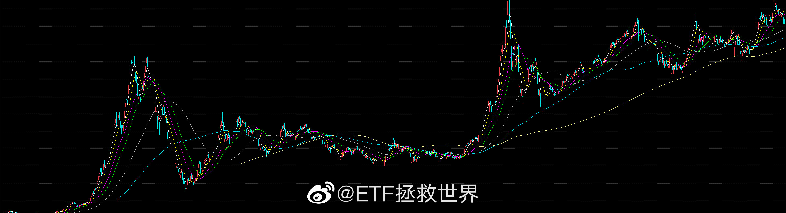
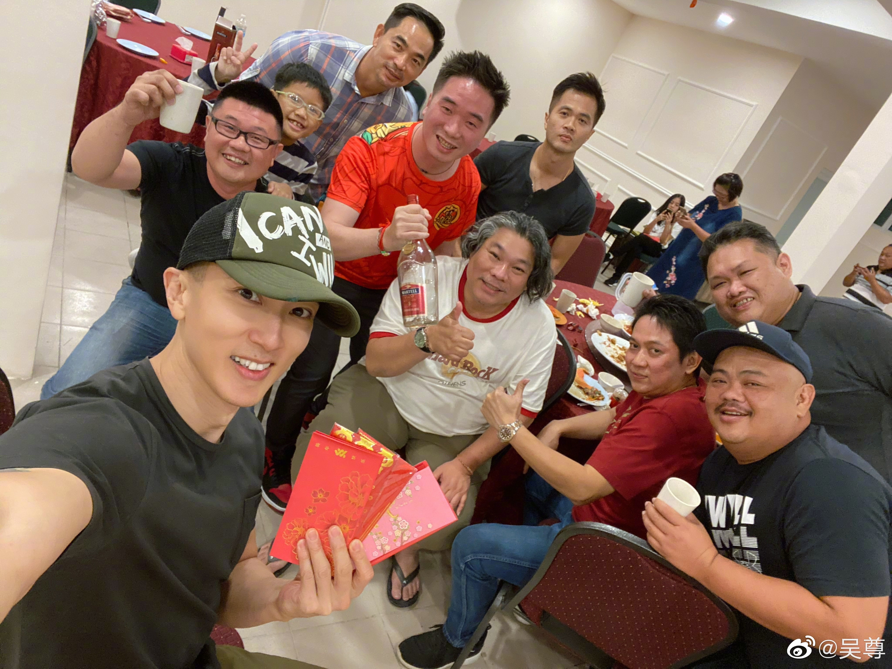
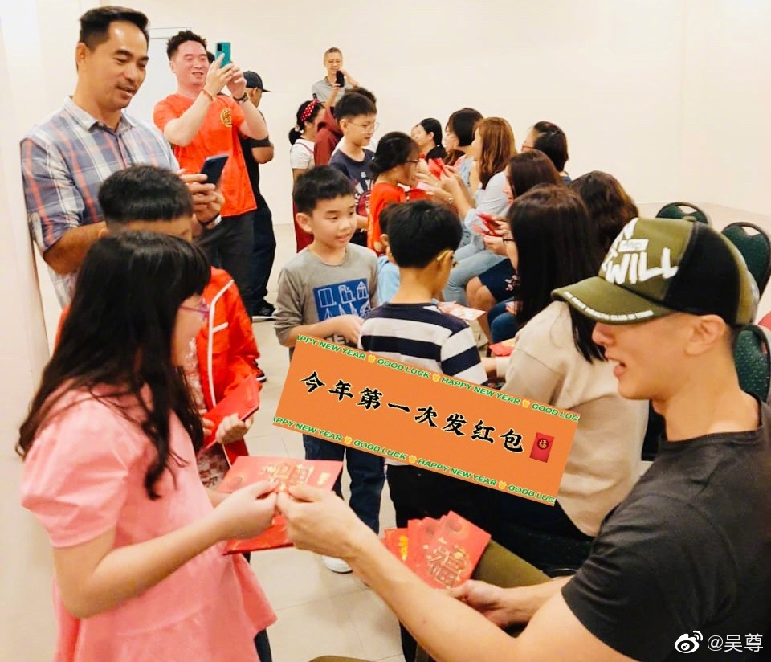
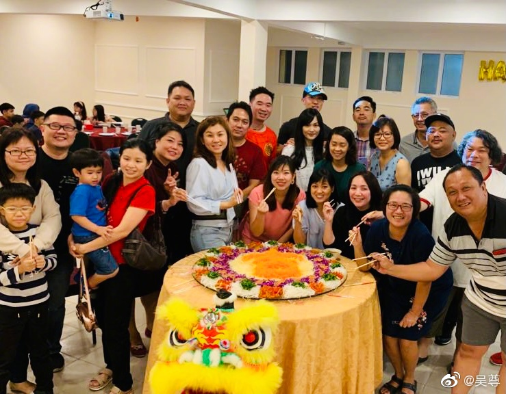

回复@恺恺2019:我京东退换货点一下小哥很快上门拿走没有一句废话，你天猫退换货要不要找客服？我京东15天内降价可以点一下保价20秒退差价，你天猫有这个功能吗？呵呵。//@恺恺2019:天猫官方旗舰店不比你京东靠谱？@ETF拯救世界:现在买需要靠谱的东西还是JD。但是很多随便用用的小玩意都是多多了。只有JD和多多都没有才去TB看看。
回复@伴影yy:能干得过15年16倍医药的恐怕没几个…… 评论配图 //@伴影yy:全指医药@ETF拯救世界:问你们一个问题，平心而论，这是不是一个牛股。客观的人如果多了我公布代码。知道是什么的不要说，乱说拉黑。 
每一个品种在没开始交易之前，都应该预先给它设计好“最大仓位”。比如你给沪深300最大仓位20%，中证500给20%，医药给15%，消费给15%……等等。然后要设计交易策略。也就是怎么买、怎么持有、怎么卖出。当达到什么样的标准时买入、持有、卖出。如果你没有设计最大仓位，没有设计交易策略，就会出现第一笔乱买，第二笔乱补。本来只想买点玩玩，谁知道补成了重仓。涨了不知道该不该卖，跌了不知道该不该买。乱补仓、乱割肉、乱追高、乱赔钱。非常混乱的人生呢。
一定要健身+保养…@吴尊:20几年没见的同学...今年的新春聚会,我终于没飞了...这些年大家的变化太大了...奇妙的是大家的感觉还是跟30年前一样...他们帮我勾起了太多的回忆,也一直爆我的料🤪回忆和缘份永远就是这么的珍贵...太感恩了😍🌈💪 